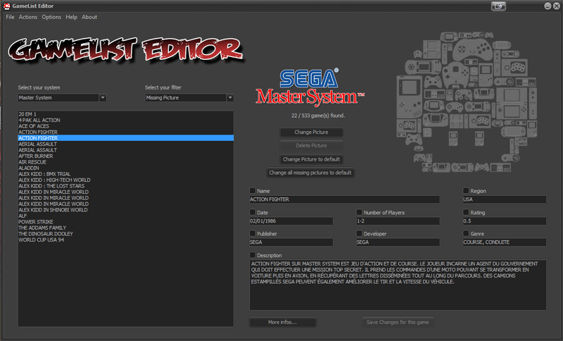
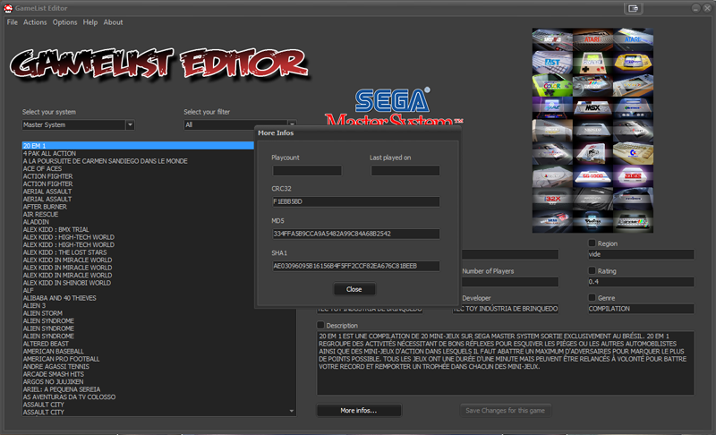
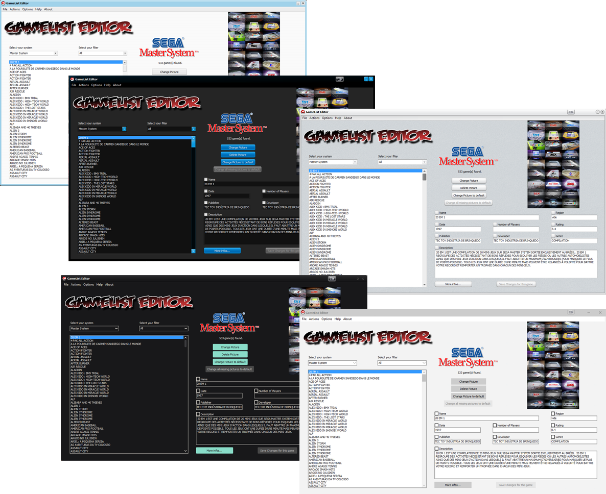

GameList Editor
A Windows editor for the gamelist.xml files behind retro game collections. Find games with missing media, fix metadata across a whole selection, and preview the videos your front end will show.
I picked up NeeeeB's original project when it stopped recognizing newer systems and could no longer connect to ScreenScraper. My fork restored scraping, expanded system support, and added batch editing and video playback.

Tidy up a collection
Find the entries that need attention. Filter by genre, publisher, or rating, or look for games that share a name or ROM. The Missing Videos filter brings gaps in your media collection into view.
Edit a group in one pass. Select several games and update fields such as region, genre, or developer together. You can also mark entries as favorites, hidden, or suitable for kids.
Fill in missing media. Replace artwork, preview or swap a video, and use ScreenScraper to look up individual entries as you review them.
Open your game list
Use File → Choose folder and select the folder containing your system folders. You can work with a local copy or point to a network share from a RetroPie or Recalbox setup.
To scrape media, enter your ScreenScraper credentials under Options → Network → Configure. The Windows build requires Windows Media Player.
Screenshots
Select any screenshot to open it at full size.







The filter, ROM details, and theme screenshots are from NeeeeB's original project.